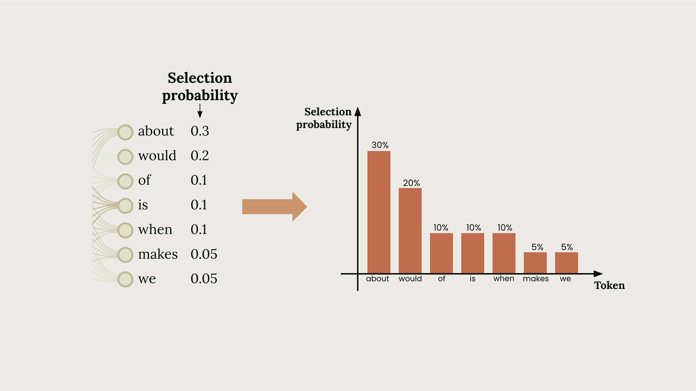
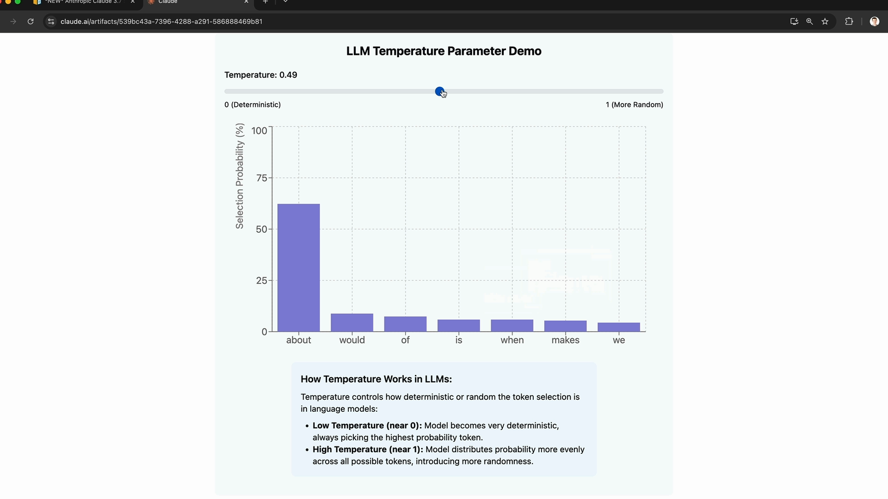

Temperature
Чему научитесь
Видео 6:07 и текст урока
К концу урока вы сможете:
- связать temperature с выбором следующего токена;
- выбрать диапазон temperature под задачу;
- передать temperature в функцию
chat.
Видео и текст урока.
Смотреть урок на Skilljar Temperature · 6:07Temperature — мощный параметр, который задаёт, насколько предсказуемыми или творческими будут ответы Claude. Если научиться им пользоваться, можно заметно улучшить ИИ-приложение.
Как Claude генерирует текст
Прежде чем разбираться с temperature, полезно понять, как Claude генерирует текст. Когда вы отправляете промпт вроде «What do you think?», он проходит три ключевых шага:
- токенизация — входной текст режется на небольшие куски;
- предсказание — считаются вероятности возможных следующих слов;
- выборка (sampling) — по этим вероятностям выбирается токен.

В этом примере Claude может дать «about» вероятность 30%, «would» — 20%, «of» — 10% и так далее. Затем модель выбирает один токен и повторяет весь процесс, пока не построит целые предложения.

Что делает temperature
Temperature — десятичное число от 0 до 1, которое напрямую влияет на эти вероятности выбора. Это как «ручка креативности» ответов Claude.

При низкой temperature (около 0) Claude становится очень детерминированным: почти всегда выбирает самый вероятный токен. При высокой (около 1) вероятность распределяется по вариантам равномернее, и ответы получаются разнообразнее и креативнее.
Интерактивное демо
Temperature можно увидеть в действии в интерактивном демо Claude. Посмотрите, как меняется распределение вероятностей, когда двигаешь ползунок temperature:

При temperature 0.0 «about» получает 100% — полностью детерминированно. При 1.0 вероятности распределяются по всем токенам равномернее, и появляются случайность и креативность.
Как выбрать temperature
Разным задачам подходят разные диапазоны:

Низкая temperature (0.0–0.3)
- фактические ответы;
- помощь с кодом;
- извлечение данных;
- модерация контента.
Средняя temperature (0.4–0.7)
- пересказ и саммари;
- учебные материалы;
- решение задач;
- творческие тексты с ограничениями.
Высокая temperature (0.8–1.0)
- мозговой штурм;
- художественные тексты;
- маркетинговые тексты;
- придумывание шуток.
Temperature в коде
Добавить temperature в функцию chat просто. Вот как изменить существующую функцию:
def chat(messages, system=None, temperature=1.0):
params = {
"model": model,
"max_tokens": 1000,
"messages": messages,
"temperature": temperature
}
if system:
params["system"] = system
message = client.messages.create(**params)
return message.content[0].text
Главные изменения: параметр temperature=1.0 в сигнатуре и "temperature": temperature в словаре params.
Проверяем эффект
Чтобы увидеть temperature в действии, попробуйте генерировать идеи фильмов с разными настройками:
# Low temperature - more predictable answer = chat(messages, temperature=0.0) # High temperature - more creative answer = chat(messages, temperature=1.0)
При 0.0 вы, скорее всего, раз за разом будете получать что-то вроде «A time-traveling archaeologist must prevent ancient artifacts from being stolen.» При 1.0 темы, персонажи и сюжеты станут гораздо разнообразнее.
Главное
Помните: temperature не гарантирует разные ответы — она лишь меняет вероятность их получить. Даже при высокой temperature Claude иногда выдаёт похожие ответы. Ключ в том, чтобы подобрать temperature под конкретную задачу:
- нужны стабильные фактические ответы — низкая temperature;
- нужен творческий мозговой штурм — повышайте temperature;
- что-то среднее — для большинства обычных задач хорошо подходит средняя.
Temperature — один из самых практичных параметров для точной настройки поведения Claude под ваши задачи.
Дальше
Следующий урок — потоковый ответ: как показывать текст по кускам, не дожидаясь конца генерации.
Оригинал урока: Temperature.